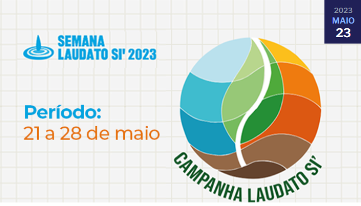

Grupo UBEC divulga Semana Laudato Si’ 2023 às Unidades de Missão
Comprometida com a educação que promove o cuidado da casa comum e com a promoção de uma sociedade justa, a União Brasileira de Educação Católica (UBEC) aderiu à nova edição da Semana Laudato Si’. Neste ano, a ação tem como tema “Esperança para a Terra. Esperança para a humanidade”, e acontecerá entre os dias 21 e 28 de maio.
Santander oferece bolsas de R$ 3.600 para estudantes da UCB
Por meio do Programa de Bolsas Santander Graduação, o banco atenderá a quatro estudantes das modalidades presencial e EAD da Católica de Brasília. O benefício será dividido em 12 parcelas de R$ 300 pagos diretamente à UCB. A complementação das mensalidades ficará por conta do estudante. As outras unidades de missão do grupo UBEC (FICR, UNICATÓLICA E UNILESTE) também serão contempladas com duas bolsas, cada.